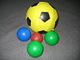

ball

Definition: A ball is a round object (usually spherical, but can sometimes be ovoid) with several uses. It is used in ball games, where the play of the game follows the state of the ball as it is hit, kicked or thrown by players. Balls can also be used for simpler activities, such as catch or juggling. Balls made from hard-wearing materials are used in engineering applications to provide very low friction bearings, known as ball bearings. Black-powder weapons use stone and metal balls as projectiles.
Source: Wikipedia
Wikipedia Page
Wikidata Page
Occurs in: